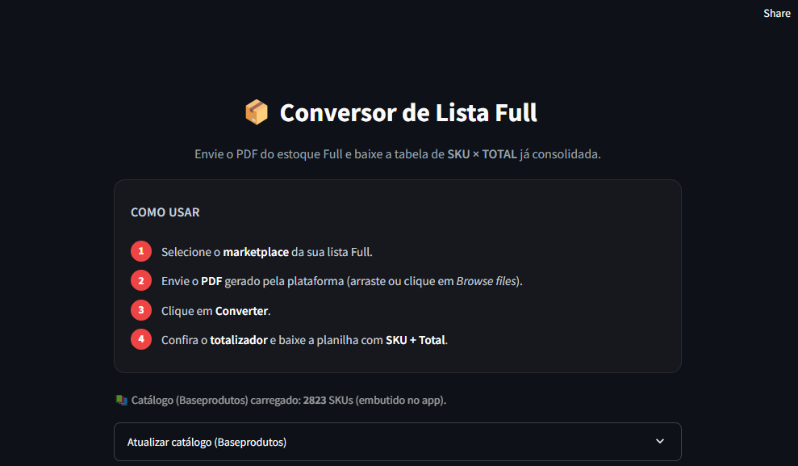
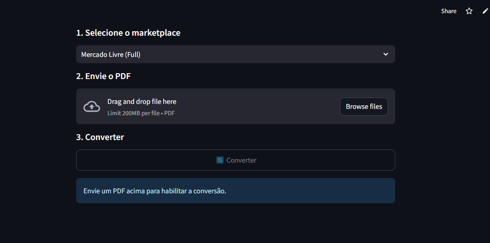
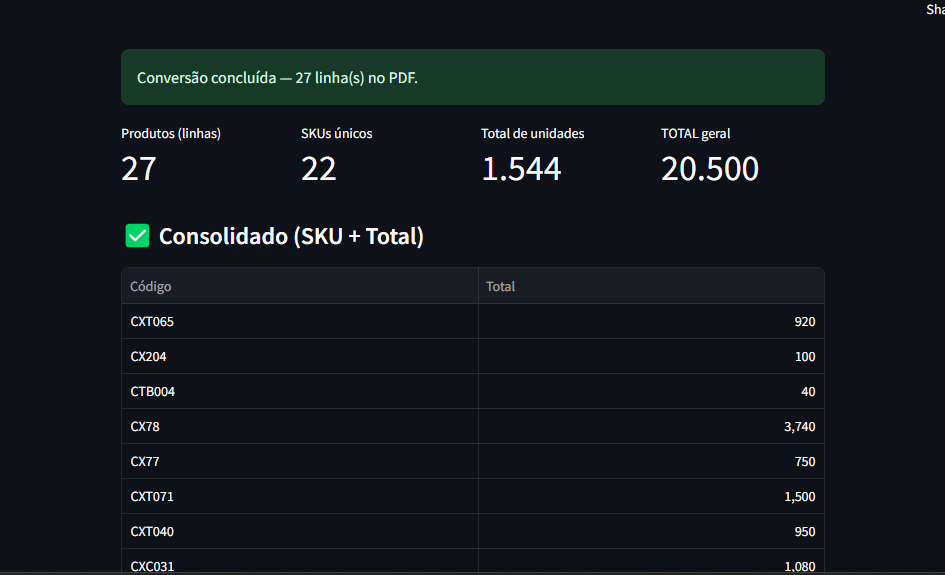

Um ERP pronto não integra sua operação. Eu construo o seu sistema.
Sistemas sob medida para empresas que vivem de planilha e retrabalho — integrando o operacional e o administrativo, com processos claros e procedimentos intuitivos para o seu time usar sem travar.
Entendo sua operação.
Desenho a solução. Entrego funcionando.
Eu não entrego um orçamento fechado e sumo por três meses. Eu mergulho em como o seu negócio funciona de verdade, mapeio onde trava e construo o sistema que integra — usando IA como alavanca pra encurtar o que levaria meses.
Entendo o negócio
Antes de qualquer linha de código, entendo a operação, o gargalo e o que realmente importa resolver.
Desenho o sistema
Modelo de dados, regras e arquitetura pensados pra durar e crescer junto com o negócio.
Entrego rápido
A IA acelera a produção. Você vê o sistema tomando forma sem a espera de um time inteiro.
O gargalo nunca fica no mesmo lugar
Hoje trava na fila de produção, amanhã no apontamento, depois na estrutura de produtos. Sistemas prontos são estáticos — não acompanham esse movimento. Com o sistema sob medida você ganha visibilidade e controle para reduzir o gargalo, onde quer que ele esteja. Implementação de verdade.
Processo sem controle
ERP limitado e lento, operacional e administrativo desconectados, cada um faz de um jeito — e o gargalo só aparece quando já travou.
Controle de verdade
Visão do processo inteiro, procedimentos claros e intuitivos, dados confiáveis de ponta a ponta — e o gargalo reduzido onde quer que ele esteja.
Sistemas sob medida pra sua operação
Sistemas de gestão
Produção, estoque, pedidos, planejamento — no lugar de planilhas que travam.
Dashboards & previsão
Indicadores, relatórios e previsão de demanda que ajudam a decidir com dados.
Aplicações sob medida
Ferramentas internas, calculadoras e automações feitas do seu jeito.
Digitalização de processos
Aquele processo que vive no papel ou na cabeça de alguém, virando sistema.
Do diagnóstico à implantação de verdade
A IA não substitui o pensamento — multiplica a velocidade. Eu dirijo, decido e valido; ela executa o trabalho pesado.
Compreender
Converso, mapeio o processo e acho a dor real — onde o gargalo está.
Desenhar
Modelo dados e regras. Arquitetura antes do código.
Construir
IA acelera a produção — rápido e iterativo.
Implantar
Implementação de verdade: treino o time e acompanho até rodar sozinho.
Um ERP de produção completo,
no lugar de uma planilha frágil
Planilha no limite
Controle de produção que não aguentava vários operadores, sem visão do que produzir nem quando. Decisões no feeling.
Sistema que cresce junto
Planejamento, ordens de produção, previsão de demanda e controle — numa ferramenta usada todo dia.
Fila & ordens de produção
Geração de OPs, programação por prazo e capacidade, fila por posto.
Estrutura de produtos (BOM)
Composição multinível e roteiros de produção por família.
Previsão de demanda
Metodologia própria, validada contra vendas reais.
Calculadoras de produção
Aproveitamento de material, necessidade e peso de compra.
Sistemas de PCP/ERP
Algumas das telas do sistema em funcionamento — do planejamento de demanda ao apontamento da produção e controle da operação.


Outros sistemas e exemplos:
Cada projeto nasce de um problema real de negócio. Aqui estão outros sistemas que foram desenvolvidos para ganhar controle, clareza e sobretudo velocidade.


Ponto Digital
Sistema de ponto eletrônico que importa registros e fecha pagamentos por período. Calcula horas, valores por hora e por dia, passagens, e sinaliza automaticamente colaboradores com registros incompletos.


Fechamento de Folha
Apuração de horas extras e pré-conferência antes da contabilidade. Importa AFD, aplica faixas de HE configuráveis, calcula VT, VR, faltas e adicionais, e entrega indicadores por colaborador.

Extrator para Expedição
Lê o PDF de pedido/nota fiscal do ERP e gera uma picklist funcional pra operação — em CSV e num PDF de expedição com fonte ampliada e dados sensíveis mascarados automaticamente.


CRM de Vendas
Funil de vendas visual em Kanban, com etapas configuráveis, valor e responsável por negócio. Contatos, tarefas com prazos (atrasadas, hoje e próximas), painel de indicadores — em aberto, ganhos e taxa de conversão — e exportação da carteira para planilha.



Conversor de Lista Full
Lê o PDF da lista de estoque Full do marketplace (Mercado Livre, Shopee) e devolve uma planilha consolidada de SKU × Total. Aplica um DE-PARA contra a base de produtos (2.800+ SKUs embutidos no app) pra padronizar os códigos, totaliza as unidades e entrega pronto — em segundos, sem digitação manual.
O que você ganha?
Velocidade real
IA acelera a entrega — semanas, não meses.
Feito sob medida
Nada de sistema genérico. Construído pro seu processo.
Falo a sua língua
Entendo negócio, não só código. A conversa é sobre resolver.
Você acompanha
Validação com os seus dados em cada etapa. Sem caixa-preta.
O gargalo muda de lugar.
Seu controle precisa acompanhar.
Me conte como a sua operação funciona hoje. Eu mapeio o processo, identifico onde trava e proponho o sistema sob medida que integra tudo — com clareza e procedimentos intuitivos.
Sem compromisso: você explica o cenário, eu mostro como resolver. Se fizer sentido, seguimos.
WhatsApp abre direto — respondo no mesmo dia.